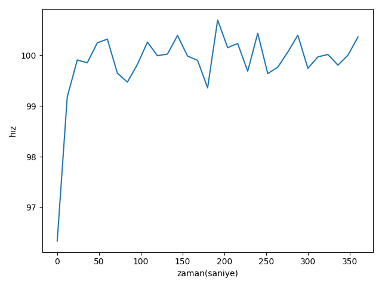

Kalman Filtereleri yazısında dış ölçümlerin bir iç konumu anlamak için nasıl kullanıldığını gördük, fakat KF’ler gayrı lineerliği iyi idare edemiyorlar. Mesela havaya atılan bir topu gürültülü ölçümlerden takip ettiğimizi düşünelim, top çıkıp inecek, değişim (state transition) / hareket parabol şeklinde (parabol gayrı lineer). Bu basit hareket bile KF ile takip edilemiyor. Gayri lineerlik ölçüm sırasında da ortaya çıkabilir, mesela bir objenin uzaklığını radardan alıyorsak ölçüm bize yerden yükseklik ve eğim olarak gelebilir, bu ölçümleri direk mesafeye çevirmek için karelerin toplamının karekökü gerekir ve bu yine bir gayrı lineerliği probleme sokmuş olur.
Çözüm için farklı yaklaşımlar var; genişletilmiş KF (EKF) lokal bir nokta etrafında Taylor açılımı kullanarak gayrı lineerliği yakalamaya uğraşıyor. Fakat hem performans hem doğruluk açısından daha verimli bir yaklaşım sigma bazlı Kalman filtreleri (UKF).
UKF’in yaptığı nedir? Normal KF’in işleyişi sırasında geçiş ya da gözlem fonsiyonlarının içinden Gaussian’lar geçirdiği söylenebilir. Gaussian’lar (yani onların \(\mu,\sigma\) parametreleri) lineerlige tabi olduklarında bozulmazlar, iki Guassian toplamı yine bir Gaussian’dır, vs. Fakat gayrı lineer fonksiyonlar işleri bozar.
UKF’in püf noktası o an eldeki Gaussian’ın standart sapma \(\sigma\)’sına oranlı seçilmiş birkaç noktanın değişim yapan fonksiyona verilmesi; normal KF’i o zaman sadece merkez nokta \(\mu\)’yu işlemden geçiriyor olarak görebiliriz, fakat UKF ile seçenekleri arttırıyoruz [1]. Bu noktalar seçildiğinde onları değişim fonksiyonuna tabi tutuyoruz, böylece ele geçen sonuç Gaussian’ı daha gerçeğe yakın oluyor. UKF yaklaşımında ayrıca seçilen her nokta için bir ağırlık gerekiyor, ve bu ağırlıklar da önceden kararlaştırılır, bazı uygulamalarda merkez noktaya daha fazla ağırlık vermek istenebilir, diğerleri dış noktaları tercih edebilir.
import math, util, scipy.linalg as linalg, filter
from numpy import eye, zeros, dot, isscalar, outer
from scipy.linalg import inv, cholesky
from numpy.random import randn
from scipy.stats import norm, multivariate_normal
ax=plt.figure().gca()
x = np.array([0, 5])
P = np.array([[4, -2.2], [-2.2, 3]])
util.plot_covariance_ellipse(x, P, facecolor='b', alpha=0.6, variance=9,plt=plt)
sigmas = filter.MerweScaledSigmaPoints(2, alpha=.5, beta=2., kappa=0.)
S = sigmas.sigma_points(x=x, P=P)
plt.scatter(S[:,0], S[:,1], c='k', s=80)
x = np.array([15, 5])
P = np.array([[3, 1.2],[1.2, 6]])
util.plot_covariance_ellipse(x, P, facecolor='g', variance=9, alpha=0.3,plt=plt)
ax.add_artist(util.arrow(S[0,0], S[0,1], 11, 4.1, 0.6))
ax.add_artist(util.arrow(S[1,0], S[1,1], 13, 7.7, 0.6))
ax.add_artist(util.arrow(S[2,0], S[2,1], 16.3, 0.93, 0.6))
ax.add_artist(util.arrow(S[3,0], S[3,1], 16.7, 10.8, 0.6))
ax.add_artist(util.arrow(S[4,0], S[4,1], 17.7, 5.6, 0.6))
ax.axes.get_xaxis().set_visible(False)
ax.axes.get_yaxis().set_visible(False)
plt.savefig('tser_ukf_02.png')
“Sigma bazlı transform edilmiş’’ (unscented transform) yeni Gaussian hesabı şöyle olur,
\[ \mu = \sum_i w_i^m y_i \]
\[ \Sigma = \sum_i w_i^c (y_i-\mu)(y_i-\mu)^T \]
Dikkat, bu yaptığımız parçacık filtrelerindeki gibi örneklemek, ya da her değişik hipotezi temsil eden “parçacıklar’’ yaratmak değil, bir Gaussian’ın hep belli yerlerindeki belli noktalara bakmak. Bu seçim tamamen deterministik, hiçbir rasgelelik yok. Seçim nasıl yapılır? Her uygulama için tasarımcı buna karar verir, altta bazı örnekler görülüyor,
Fakat endüstri sigmayı ve ağırlıklarını seçmek için 2005’ten itibaren [2]’deki yöntemi kabul etmiş görünüyor.
Trasform Örneği
Alttaki gibi bir gayrı-lineer fonksiyon
\[ \left\{ \begin{array}{ll} x = x + y \\ y = 0.1 x^2 + y^2 \end{array} \right. \]
olsun, bu fonksiyona alttaki çok boyutlu Gaussian’dan örneklenmiş noktaları geçeceğiz,
\[ \mu = \left[\begin{array}{r} 0 \\ 0 \end{array}\right], \quad \Sigma = \left[\begin{array}{rr} 32 & 15 \\ 15 & 40 \end{array}\right] \]
def f_nonlinear_xy(x, y):
return np.array([x + y, .1*x**2 + y*y])
mean = (0, 0)
p = np.array([[32, 15], [15., 40.]])
# Compute linearized mean
mean_fx = f_nonlinear_xy(*mean)
#generate random points
xs, ys = multivariate_normal.rvs(mean=mean, cov=p, size=2000).T
util.plot_monte_carlo_mean(xs, ys, f_nonlinear_xy, mean_fx, 'Lineerize Edilmis Ortalama');
plt.savefig('tser_ukf_13.png')Ortalamalardaki fark x=-0.471, y=43.237
Görülüyor ki eğer EKF ile olduğu gibi bir lineerizasyon yapılsa ortaya çok büyük bir hata çıkacak. Tekrar vurgulamak gerekirse figürde görülen “lineerize edilmiş ortalama’’ Gaussian \(\mu\)’sunun gayrı lineer fonksiyona geçilmiş hali, ki EKF bu şekilde işlem yapar, diğeri Gaussian’dan alınan noktaların gayrı-lineer fonksiyona geçildikten sonra alınan ortalama.
Fakat sigma bazlı transform kullanırsak,
from numpy.random import multivariate_normal
import util
#initial mean and covariance
mean = (0, 0)
p = np.array([[32., 15], [15., 40.]])
# create sigma points - we will learn about this later
points = filter.MerweScaledSigmaPoints(n=2, alpha=.3, beta=2., kappa=.1)
Wm, Wc = points.weights()
sigmas = points.sigma_points(mean, p)
### gayri-lineer fonksiyondan gecir
sigmas_f = np.empty((5, 2))
for i in range(5):
sigmas_f[i] = f_nonlinear_xy(sigmas[i, 0], sigmas[i ,1])
### sigma bazli transform ile yeni ortalama ve kovaryansi hesapla
ukf_mean, ukf_cov = filter.unscented_transform(sigmas_f, Wm, Wc)
# rasgele noktalar uret
np.random.seed(100)
xs, ys = multivariate_normal(mean=mean, cov=p, size=5000).T
util.plot_monte_carlo_mean(xs, ys, f_nonlinear_xy, ukf_mean, 'Sigma Bazli Ortalama')
plt.xlim(-30, 30); plt.ylim(0, 90)
plt.subplot(121)
plt.scatter(sigmas[:,0], sigmas[:,1], c='r', s=30);
plt.savefig('tser_ukf_12.png')Ortalamalardaki fark x=-0.097, y=0.549
Bu sonuç bana müthiş geliyor; sadece 5 nokta kullanarak ortalamaya çok yakın bir sonucu hesaplayabildik, ayrıca bunu gayrı lineerliğin ne olduğundan tamamen bağımsız olarak yaptık; eğer sigma noktalarını üreten koda bakarsak göreceğiz ki bu kod gayrı-lineer fonksiyondan habersiz.
Filtre
UKF formüllerine bakalım. Geçiş ve gözlemin \(f,h\) olduğunu düşünelim, matris formunda \(F,H\). O anda elde olan \(\mu,\Sigma\)’yı alıp, önceden seçilmiş sigma noktaları üzerinden bir \(X\) elde ediyoruz. Bir sonraki zaman dilimine
\[ Y = f(X) \]
ile geçiyoruz. Şimdi sigma bazlı transform ile tahmini ortalama kovaryans hesaplarız,
\[ \bar{\mu} = \sum w^m Y \]
\[ \bar{\Sigma} = \sum w^c (Y-\hat{\mu})(Y-\hat{\mu})^T + Q \]
KF ile geçiş ortalama için \(\bar{x} = Fx\) ve kovaryans \(\bar{P} = FPF^T + Q\) ile olurdu.
Güncelleme adımında eldeki sigma noktalarını bir tahmine çeviriyoruz,
\[ Z = h(Y) \]
Sonra bu noktaların ortalama ve kovaryansını sigma bazlı transformu kullanarak hesaplayabiliriz,
\[ \mu_z = \sum w^m Z \]
\[ P_z = \sum w^c (Z-\bar{\mu}) (Z-\bar{\mu})^T + R\]
Şimdi Kalman kazancı (gain) ve artıkları hesaplanabilir. Artıklar basit
\[ y = z - \mu_z\]
Kazanç için önce konum ve ölçümlerin çapraz kovaryansını hesaplarız,
\[ P_{xz} = \sum w^c (X-\mu)(Z-\mu_z)^T \]
sonra kazancı hesaplarız,
\[ K = P_{xz}P_z^{-1} \]
Üstteki matris tersi işlemi bir nevi oran hesabı gibi görebiliriz, o zaman Kalman kazancı
\[ K \approx \frac{P_{xz}}{P_z^{-1}} \approx \frac{\textrm{mevcut konuma inanç}}{\textrm{ölçüme olan inanç}} \]
oranından ibarettir. Nihayet yeni kestirme hesabı artık ve kazanç kullanarak hesaplanabilir,
\[ x = \bar{x} + Ky \]
yeni kovaryans
\[ P = \bar{P} - KP_zK^T \]
Filtrenin iç kodlaması hakkında diğer matematiksel detaylar için [1, sf. 382].
Dikkat çekilmesi gereken püf nokta KF’te olduğu gibi ölçümleri üretenin artık bir matris olmadığıdır. Normal Kalman filtreleri ile elde bir ölçüm “fonksiyonu’’ vardır fakat bu fonksiyonu bir \(H\) matrisi olarak temsil etmek zorundayız. Efendim boyutları düzgün olmalı, ki konum \(x\)’i çarpabilsin, vs. UKF ile bir \(h\) fonksiyonu var, bu fonksiyonlar ek işlemler yapılmadan önce verinin kendisini transforme ediyorlar, ve”yeni’’ veri üzerinde ek filtreleme işlemleri yapıyoruz, mesela Kalman kazancını bu transform edilmiş veri üzerinden hesaplıyoruz. Kıyasla KF ile \(H\) matrisi matris olarak direk kazanç hesabında kullanılıyor. Ardından UKF ile veriye öyle noktalarda (sigma noktaları) bakıyoruz ki \(h\) ne kadar gayrı-lineer olursa olsun onun temel özelliklerini yakalayabilmiş oluyoruz. Bu geçiş fonksiyonu \(f\) için de geçerli tabii, artık onun da bir matris olması gerekmiyor. Ama hala \(F,H\) matrislerini tasarlayıp onları \(f,h\) fonksiyonları içinde \(x\)’i çarpmak için kullanabiliriz tabii, ama bu şart değil.
Örnek
Bir KF tasarlamak için \(x,F,H,R\) matrislerinin ne olduğunu kararlaştırmak gerekiyor demiştik, bu durum daha önce KF yazısında işlendi. Konum bilgisi nedir, geçiş nedir, ölçüm nedir? Hareket halindeki bir objeyi takip ettiğimizi düşünelim, konum
\[ x=\left[\begin{array}{cccc} x&\dot{x}&y&\dot{y} \end{array}\right]^T \]
olabilir. Konum geçişi
\[ F = \left[\begin{array}{rrrr} 1 & \Delta t & 0 & 0 \\ 0 & 1 & 0 & 0 \\ 0 & 0 & 1 & \Delta t \\ 0 & 0 & 0 & 1 \end{array}\right] \]
Üstteki denklemle bir Newton formülünü kodlamış oluyoruz,
\[ x_k = x_{k-1} + \dot{x}_{k-1}\Delta t \]
Algılayıcılar hareketli aracın yerini bildiriyor ama hızını bildiremiyor, o zaman
\[ H = \left[\begin{array}{rrrr} 1 & 0 & 0 & 0 \\ 0 & 0 & 1 & 0 \end{array}\right]\]
Diyelim ki algılayıcının pozisyonu belirleme hatası hem \(x\) hem \(y\) kordinatları için \(1\sigma = 0.3\) metre, bu bize alttaki ölçüm gürültü matrisini veriyor,
\[ R = \left[\begin{array}{cc} 0.3^2 & 0 \\ 0 & 0.3^2 \end{array}\right]\]
Konum geçişinde de gürültü var, o da
\[ Q = \left[\begin{array}{cc} \frac{1}{4} \Delta t^4 & \frac{1}{2} \Delta t^3 \\ \frac{1}{2} \Delta t^3 & \Delta t^2 \end{array}\right] \sigma^2 \]
Tabii biz simülasyon amaçlı veri üretirken de üstteki matrisi kullanacağız.
Kodlar altta,
import math, util, scipy.linalg as linalg
from numpy import eye, zeros, dot, isscalar, outer
from scipy.linalg import inv, cholesky
from numpy.random import randn
from scipy.stats import norm, multivariate_normal
import numpy as np
def dot3(A,B,C):
return dot(A, dot(B,C))
def logpdf(x, mean, cov):
flat_mean = np.asarray(mean).flatten()
flat_x = np.asarray(x).flatten()
return multivariate_normal.logpdf(flat_x, flat_mean, cov, True)
def unscented_transform(sigmas, Wm, Wc, noise_cov=None,
mean_fn=None, residual_fn=None):
kmax, n = sigmas.shape
if mean_fn is None:
x = np.dot(Wm, sigmas) # dot = \Sigma^n_1 (W[k]*Xi[k])
else:
x = mean_fn(sigmas, Wm)
if residual_fn is None:
y = sigmas - x[np.newaxis,:]
P = y.T.dot(np.diag(Wc)).dot(y)
else:
P = np.zeros((n, n))
for k in range(kmax):
y = residual_fn(sigmas[k], x)
P += Wc[k] * np.outer(y, y)
if noise_cov is not None:
P += noise_cov
return (x, P)
def Q_discrete_white_noise(dim, dt=1., var=1.):
assert dim == 2 or dim == 3
if dim == 2:
Q = np.array([[.25*dt**4, .5*dt**3],
[ .5*dt**3, dt**2]], dtype=float)
else:
Q = np.array([[.25*dt**4, .5*dt**3, .5*dt**2],
[ .5*dt**3, dt**2, dt],
[ .5*dt**2, dt, 1]], dtype=float)
return Q * var
class MerweScaledSigmaPoints(object):
def __init__(self, n, alpha, beta, kappa, sqrt_method=None, subtract=None):
self.n = n
self.alpha = alpha
self.beta = beta
self.kappa = kappa
if subtract is None:
self.subtract= np.subtract
else:
self.subtract = subtract
def num_sigmas(self):
return 2*self.n + 1
def sigma_points(self, x, P):
assert self.n == np.size(x), \
"expected size {}, but size is {}".format(self.n, np.size(x))
n = self.n
if np.isscalar(x): x = np.asarray([x])
if np.isscalar(P): P = np.eye(n)*P
else: P = np.asarray(P)
lambda_ = self.alpha**2 * (n + self.kappa) - n
U = cholesky((lambda_ + n)*P)
sigmas = np.zeros((2*n+1, n))
sigmas[0] = x
for k in range(n):
sigmas[k+1] = self.subtract(x, -U[k])
sigmas[n+k+1] = self.subtract(x, U[k])
return sigmas
def weights(self):
n = self.n
lambda_ = self.alpha**2 * (n +self.kappa) - n
c = .5 / (n + lambda_)
Wc = np.full(2*n + 1, c)
Wm = np.full(2*n + 1, c)
Wc[0] = lambda_ / (n + lambda_) + (1 - self.alpha**2 + self.beta)
Wm[0] = lambda_ / (n + lambda_)
return Wm, Wc
class UKF(object):
def __init__(self, dim_x, dim_z, hx, fx, points,
x_mean_fn=None, z_mean_fn=None,
residual_x=None,
residual_z=None):
self.Q = eye(dim_x)
self.R = eye(dim_z)
self.x = zeros(dim_x)
self.P = eye(dim_x)
self._dim_x = dim_x
self._dim_z = dim_z
self.points_fn = points
self._num_sigmas = points.num_sigmas()
self.hx = hx
self.fx = fx
self.x_mean = x_mean_fn
self.z_mean = z_mean_fn
self.log_likelihood = 0.0
self.Wm, self.Wc = self.points_fn.weights()
if residual_x is None:
self.residual_x = np.subtract
else:
self.residual_x = residual_x
if residual_z is None:
self.residual_z = np.subtract
else:
self.residual_z = residual_z
self.sigmas_f = zeros((self._num_sigmas, self._dim_x))
self.sigmas_h = zeros((self._num_sigmas, self._dim_z))
def predict(self, dt):
sigmas = self.points_fn.sigma_points(self.x, self.P)
for i in range(self._num_sigmas):
# parametre verilen dt oldugu gibi fx'e geciliyor,
# yani UKF matematiginde direk kullanilmiyor
self.sigmas_f[i] = self.fx(sigmas[i], dt)
self.x, self.P = unscented_transform(self.sigmas_f,
self.Wm,
self.Wc,
self.Q,
self.x_mean,
self.residual_x)
def predict(self, dt, u):
sigmas = self.points_fn.sigma_points(self.x, self.P)
for i in range(self._num_sigmas):
# parametre verilen dt oldugu gibi fx'e geciliyor,
# yani UKF matematiginde direk kullanilmiyor
self.sigmas_f[i] = self.fx(sigmas[i], dt, u)
self.x, self.P = unscented_transform(self.sigmas_f,
self.Wm,
self.Wc,
self.Q,
self.x_mean,
self.residual_x)
def update(self, z):
for i in range(self._num_sigmas):
self.sigmas_h[i] = self.hx(self.sigmas_f[i])
zp, Pz = unscented_transform(self.sigmas_h,
self.Wm,
self.Wc,
self.R,
self.z_mean,
self.residual_z)
Pxz = zeros((self._dim_x, self._dim_z))
for i in range(self._num_sigmas):
dx = self.residual_x(self.sigmas_f[i], self.x)
dz = self.residual_z(self.sigmas_h[i], zp)
Pxz += self.Wc[i] * outer(dx, dz)
self.K = dot(Pxz, inv(Pz))
self.y = self.residual_z(z, zp)
self.x = self.x + dot(self.K, self.y)
self.P = self.P - dot3(self.K, Pz, self.K.T)
self.log_likelihood = logpdf(self.y, np.zeros(len(self.y)), Pz)
def cross_variance(self, x, z, sigmas_f, sigmas_h):
Pxz = zeros((sigmas_f.shape[1], sigmas_h.shape[1]))
N = sigmas_f.shape[0]
for i in range(N):
dx = self.residual_x(sigmas_f[i], x)
dz = self.residual_z(sigmas_h[i], z)
Pxz += self.Wc[i] * outer(dx, dz)
@property
def likelihood(self):
return math.exp(self.log_likelihood)import filter
def f_cv(x, dt):
F = np.array([[1, dt, 0, 0],
[0, 1, 0, 0],
[0, 0, 1, dt],
[0, 0, 0, 1]])
return np.dot(F, x)
def h_cv(x):
return np.array([x[0], x[2]])
dt = 1.0
std_x, std_y = .3, .3
zs = [np.array([i + randn()*std_x,i + randn()*std_y]) for i in range(100)]
sigmas = filter.MerweScaledSigmaPoints(4, alpha=.1, beta=2., kappa=1.)
ukf = filter.UKF(dim_x=4, dim_z=2, fx=f_cv,hx=h_cv, points=sigmas)
ukf.x = np.array([0., 0., 0., 0.])
ukf.R = np.diag([0.09, 0.09])
ukf.Q[0:2, 0:2] = filter.Q_discrete_white_noise(2, dt=1, var=0.02)
ukf.Q[2:4, 2:4] = filter.Q_discrete_white_noise(2, dt=1, var=0.02)
uxs = []
for z in zs:
ukf.predict(dt=dt)
ukf.update(z)
uxs.append(ukf.x.copy())
uxs = np.array(uxs)
plt.plot(uxs[:, 0], uxs[:, 2])
plt.savefig('tser_ukf_01.png')Bir Uçağı Radar ile Takip Etmek
Şimdi ilk gayrı lineer problemimize gelelim. Yeryüzündeki sabit bir radarı algılayıcı olarak kullanarak bir uçağı takip edeceğiz. Basitlik amaçlı olarak radar sinyalleri ve takip iki boyutta olacak. Radarlar bilindiği gibi radyo sinyallerini etrafa yayarlar, ve etraftaki cisimlerden geri gelen yansımalara bakarak bir mesafe hesaplarlar. Bu problemdeki radar bize bir uzaklık ve cismin yerle olan açısını (slant) raporlayacak. Biz bu eğimi ve mesafeyi alıp bir uzaklık ve irtifa / yükseklik (altitude) hesabına çevireceğiz.

Uçağın sabit irtifada uçtuğunu farz edelim,
\[ \vec{x} = \left[\begin{array}{c} \textrm{uzaklık} \\ \textrm{hız} \\ \textrm{irtifa} \end{array}\right] = \left[\begin{array}{c} x_{pos} \\ x_{vel} \\ x_{alt} \end{array}\right] = \left[\begin{array}{c} x \\ \dot{x} \\ y \end{array}\right] \]
Geçiş fonksiyonu lineer
\[ F = \left[\begin{array}{ccc} 1 & \Delta t & 0 \\ 0 & 1 & 0 \\ 0 & 0 & 1 \end{array}\right] \left[\begin{array}{c} x \\ \dot{x} \\ y \end{array}\right] \]
Şimdi ölçüm fonksiyonunu tasarlamak lazım, probleme tersten bakıyoruz şimdi, yani “eğer yer seviyesindeki uzaklığı ve irtifayı biliyor olsaydık açıyı (bearing) ve sinyal uzaklığını (range) nasıl ölçüyor olurduk?’’ sorusunu cevaplıyoruz. Pitagor denklemini kullanabiliriz,
\[ range = \sqrt{(x_{ac} - x_{radar})^2 + (z_{ac}-z_{radar})^2 } \]
Yer ile açı için
\[ bearing = \tan^{-1} \frac{z_{ac}-z_{radar}}{x_{ac}-x_{radar}}\]
def f_radar(x, dt):
F = np.array([[1, dt, 0],
[0, 1, 0],
[0, 0, 1]], dtype=float)
return np.dot(F, x)
def h_radar(x):
dx = x[0] - h_radar.radar_pos[0]
dz = x[2] - h_radar.radar_pos[1]
slant_range = math.sqrt(dx**2 + dz**2)
bearing = math.atan2(dz, dx)
return slant_range, bearing
h_radar.radar_pos = (0, 0)
from numpy.linalg import norm
from math import atan2
class RadarStation(object):
def __init__(self, pos, range_std, bearing_std):
self.pos = np.asarray(pos)
self.range_std = range_std
self.bearing_std = bearing_std
def reading_of(self, ac_pos):
diff = np.subtract(ac_pos, self.pos)
rng = norm(diff)
brg = atan2(diff[1], diff[0])
return rng, brg
def noisy_reading(self, ac_pos):
rng, brg = self.reading_of(ac_pos)
rng += randn() * self.range_std
brg += randn() * self.bearing_std
return rng, brg
def z_to_x(self, slant_range, angle):
x = cos(angle)*slant_range
z = sin(angle)*slant_range
return self.pos + (x,z)
class ACSim(object):
def __init__(self, pos, vel, vel_std):
self.pos = np.asarray(pos, dtype=float)
self.vel = np.asarray(vel, dtype=float)
self.vel_std = vel_std
def update(self, dt):
dx = self.vel*dt + (randn() * self.vel_std) * dt
self.pos += dx
return self.pos
import math
from numpy import random
dt = 12. # 12 seconds between readings
range_std = 5 # meters
bearing_std = math.radians(0.5)
ac_pos = (0., 1000.)
ac_vel = (100., 0.)
radar_pos = (0., 0.)
h_radar.radar_pos = radar_pos
points = filter.MerweScaledSigmaPoints(n=3, alpha=.1, beta=2., kappa=0.)
kf = filter.UKF(3, 2, fx=f_radar, hx=h_radar, points=points)
kf.Q[0:2, 0:2] = filter.Q_discrete_white_noise(2, dt=dt, var=0.1)
kf.Q[2,2] = 0.1
kf.R = np.diag([range_std**2, bearing_std**2])
kf.x = np.array([0., 90., 1100.])
kf.P = np.diag([300**2, 30**2, 150**2])
random.seed(200)
pos = (0, 0)
radar = RadarStation(pos, range_std, bearing_std)
ac = ACSim(ac_pos, (100, 0), 0.02)
time = np.arange(0, 360 + dt, dt)
xs = []
for _ in time:
ac.update(dt)
r = radar.noisy_reading(ac.pos)
kf.predict(dt=dt)
kf.update([r[0], r[1]])
xs.append(kf.x)
xs = np.asarray(xs)
plt.figure()
plt.plot(time, xs[:, 0]/1000.)
plt.xlabel('zaman(saniye)')
plt.ylabel('yer(km)')
plt.tight_layout()
plt.savefig('tser_ukf_04.png')
plt.figure()
plt.plot(time, xs[:, 1])
plt.xlabel('zaman(saniye)')
plt.ylabel(u'hız')
plt.tight_layout()
plt.savefig('tser_ukf_05.png')
plt.figure()
plt.plot(time, xs[:,2])
plt.xlabel('zaman(saniye)')
plt.ylabel('irtifa')
plt.tight_layout()
plt.savefig('tser_ukf_06.png')

Sonuçlar iyi, fakat uçağın hiç irtifa değiştirmediğini farzettik. Şimdi uçağın bir dakika sonra daha yükseğe tırmanmaya başladığını düşünelim, ve simülasyon verisini ona göre üretelim. O zaman tırmanma oranını da konum matrisine eklememiz gerekir,
\[ \vec{x} = \left[\begin{array}{c} \textrm{uzaklık} \\ \textrm{hız} \\ \textrm{irtifa} \\ \textrm{tırmanma oranı} \end{array}\right] = \left[\begin{array}{c} x \\ \dot{x} \\ y \\ \dot{y} \end{array}\right] \]
Konum geçiş matrisi de değişir,
\[ \vec{x}_{\textrm{geçiş sonrası}} = \left[\begin{array}{cccc} 1 & \Delta t & 0 & 0 \\ 0 & 1 & 0 & 0 \\ 0 & 0 & 1 & dt \\ 0 & 0 & 0 & 1 \end{array}\right] \left[\begin{array}{c} x \\ \dot{x} \\ y \\ \dot{y} \end{array}\right] \]
ki geçiş hala lineer. Ölçüm fonksiyonu aynı kalıyor, sadece boyutlar değiştiği için \(Q\)’yi buna göre uyarlamak gerekiyor. Bu kadar.
def f_cv_radar(x, dt):
F = np.array([[1, dt, 0, 0],
[0, 1, 0, 0],
[0, 0, 1, dt],
[0, 0, 0, 1]], dtype=float)
return np.dot(F, x)
def cv_UKF(fx, hx, R_std):
points = filter.MerweScaledSigmaPoints(n=4, alpha=.1, beta=2., kappa=-1.)
kf = filter.UKF(4, len(R_std), fx=fx, hx=hx, points=points)
kf.Q[0:2, 0:2] = filter.Q_discrete_white_noise(2, dt=dt, var=0.1)
kf.Q[2:4, 2:4] = filter.Q_discrete_white_noise(2, dt=dt, var=0.1)
kf.R = np.diag(R_std)
kf.R = np.dot(kf.R, kf.R) # square to get rariance
kf.x = np.array([0., 90., 1100., 0.])
kf.P = np.diag([300**2, 3**2, 150**2, 3**2])
return kf
random.seed(200)
ac = ACSim(ac_pos, (100, 0), 0.02)
kf = cv_UKF(f_cv_radar, h_radar, R_std=[range_std, bearing_std])
time = np.arange(0, 360 + dt, dt)
xs = []
for t in time:
if t >= 60:
ac.vel[1] = 300/60 # 300 meters/minute climb
ac.update(dt)
r = radar.noisy_reading(ac.pos)
kf.predict(dt=dt)
kf.update([r[0], r[1]])
xs.append(kf.x)
xs = np.array(xs)
plt.figure()
plt.plot(time, xs[:,2])
plt.xlabel('zaman(saniye)')
plt.ylabel('yükseklik')
plt.tight_layout()
plt.savefig('tser_ukf_08.png')
print(u'Gerçek irtifa: {:.1f}'.format(ac.pos[1]))
print(u'UKF ile hesaplanan irtifa: {:.1f}'.format(xs[-1][2]))Gerçek irtifa: 2561.9
UKF ile hesaplanan irtifa: 2432.9
Görüldüğü gibi irtifa tahmini daha zor hale geldi, bolca gürültü var, fakat takip başarılı.
Birden Fazla Pozisyon Verisini Birleştirmek
GPS icat edilmeden önce gemiler ve uçaklar uzaklık ve açı üzerinden konum bulma sistemleri kullanırlardı, VOR sistemi bunlardan biriydi. Mesela bir uçakta iki tane VOR alıcısı olabilirdi, pilot bu alıcılardan her birini farklı bir istasyona ayarlardı (radyoda doğru frekans ile kanal bulmak gibi herhalde), ve her VOR alıcısı “radyal (radial)’’ denen bir bilgiyi verirdi, bu bilgi VOR istasyonunun alıcıya olan açısıydı. Bu iki radyalı, istasyon sinyal uzaklık kapasitesini kullanıp onun etrafında bir çember çizerek, istasyonların bilinen yerlerini kullanarak, ve çemberlerin kesişme noktasında uçağın olduğu yeri bulabilirdiniz.
Ama tek bir kerelik kesişme bulmak, elle bu hesapları yapmak çok hataya açık bir yaklaşım. Kalman filtrelemesi ile, ardı ardına, özyineli olarak çok daha iyi hesap yapabiliriz. Problemi tarif edelim, elde iki tane algılayıcı var, ve bilinen A, B istasyonlarına olan açıyı elde ediyoruz,

Çemberler katlı çizildi, eğer algılayıcıda gürültü varsa çember çizgisi daha kalın oluyor. İstasyon ile algılayıcı arasındaki açı (bearing) şöyle hesaplanıyor,
def bearing(sensor, target_pos):
return math.atan2(target_pos[1] - sensor[1],
target_pos[0] - sensor[0])Filtre her güncelleme için bir vektör içinde farklı iki algılayıcıdan gelen iki tane ölçüm alıyor,
def measurement(A_pos, B_pos, pos):
angle_a = bearing(A_pos, pos)
angle_b = bearing(B_pos, pos)
return [angle_a, angle_b]Şimdi filtrelemeyi yapalım,
from numpy.random import randn
import math, filter
def fx_VOR(x, dt):
x[0] += x[1] * dt
x[2] += x[3] * dt
return x
sa_pos = [-400, 0]
sb_pos = [400, 0]
def hx_VOR(x):
# measurement to A
pos = (x[0], x[2])
return measurement(sa_pos, sb_pos, pos)
def run_vor_filter(target_pos):
np.random.seed(123)
std_noise = math.radians(0.5)
Q = 1.0
dt=0.1
kappa=0.0
points = filter.MerweScaledSigmaPoints(n=4, alpha=.1, beta=2., kappa=kappa)
f = filter.UKF(dim_x=4, dim_z=2, hx=hx_VOR, fx=fx_VOR, points=points)
f.x = np.array([target_pos[0], 1., target_pos[1], 1.])
q = filter.Q_discrete_white_noise(2, dt, Q)
f.Q[0:2, 0:2] = q
f.Q[2:4, 2:4] = q
f.R *= std_noise**2
f.P *= 1000
xs, txs = [], []
for i in range(300):
target_pos[0] += 1 + randn()*0.0001
target_pos[1] += 1 + randn()*0.0001
txs.append((target_pos[0], target_pos[1]))
z = measurement(sa_pos, sb_pos, target_pos)
z[0] += randn() * std_noise
z[1] += randn() * std_noise
f.predict(dt=dt)
f.update(z)
xs.append(f.x)
xs = np.asarray(xs)
txs = np.asarray(txs)
plt.plot(xs[:, 0], xs[:, 2])
plt.plot(txs[:, 0], txs[:, 1])
run_vor_filter(target_pos = [100, 200])
plt.savefig('tser_ukf_10.png')
Sonuç oldukca iyi. Başlangıçta biraz hata var ama hata hemen düzeliyor, ve gerçeğe oldukca yakın hesabı elde etmeye başlıyoruz. Şimdi, problemin gayrı-lineerliğini iyi gözlemlemek için hedefi iki istasyon arasına, aynı y-ekseninde olacak şekilde koyacağım, bu sigma ortalamalarındaki gayrı-lineerliği daha çok ortaya çıkartacak, çünkü açı sıfır derece etrafında olacak, ama açı sıfır altına inmeye başlayınca birdenbire çok büyük bir açı hesaplanıyor olacak tabii, çünkü orada \(2\pi\) açısı var. Bu tabii ki filtrenin işleyişini oldukca bozuyor,
run_vor_filter(target_pos = [100, 0])
plt.savefig('tser_ukf_11.png')
Not:
Filtrenin ismindeki “unscented’’ kelimesi nereden geliyor? Bu kelime ilk kez”unscented transform’’ bağlamında bu kavramı icat eden kişi tarafından kullanılmış, fakat yazar o makalede niye kelimeyi kullandığını anlatmamış. Anlamsal olarak terimin çok uyduğu söylenemez, belki “scent’’ kullanımı İngilizce”iz takibi’‘, “iz sürme’’ çağrışımı yaptığı için, bu filtre, örneklem bazlı parçacık filtreleri gibi, bir hipotez peşinden gitmiyor (o alandaki parçacıkları arttırıp), hep deterministik seçilen belli noktaları kullanıyor. İsmin belki buradan geldiği düşünülebilir.
Kodlar
Kaynaklar
[1] Labbe, Kalman and Bayesian Filters in Python, https://github.com/rlabbe/Kalman-and-Bayesian-Filters-in-Python
[2] Van der Merwe, Sigma-Point Kalman Filters for Probabilistic Inference in Dynamic State-Space Models, dissertation (2004),http://www.cslu.ogi.edu/publications/ps/merwe04.pdf
[3] Julier, The Scaled Unscented Transformation, https://www.cs.unc.edu/~welch/kalman/media/pdf/ACC02-IEEE1357.PDF